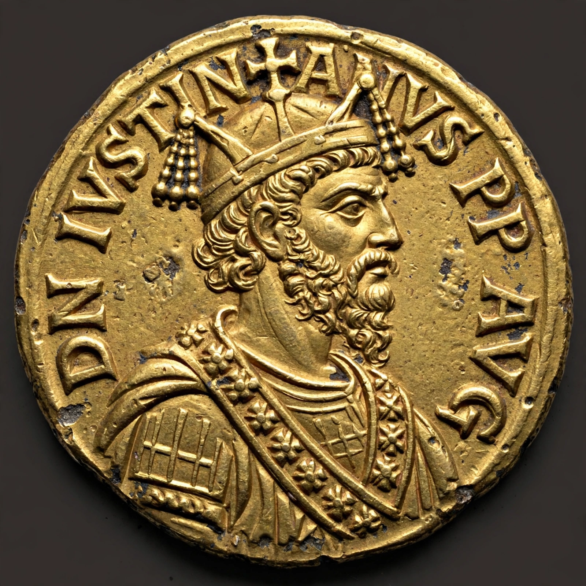

Nikephoros I
Nikephoros I (Greek: Νικηφόρος; c. 750 – 26 July 811) was Byzantine emperor from 802 to 811. Formerly the empire's chief finance minister (the logothetēs tou genikou) under Empress Irene, he deposed her in a palace coup and founded the short-lived Nikephorian dynasty. A skilled administrator, he pursued controversial fiscal reforms and reversed Irene's iconophile religious policy by recalling persecuted iconoclast opponents, though he himself remained broadly tolerant. He was killed in battle against the Bulgars at the Battle of Pliska, where Khan Krum had his skull made into a drinking cup.
| Reign | 31 October 802 – 26 July 811 |
|---|---|
| Predecessor | Irene of Athens |
| Successor | Staurakios |
| Born | c. 750, Seleucia Sidera, Pisidia |
| Died | 26 July 811 (aged ~61), Pliska, Bulgaria |
| Dynasty | Nikephorian |
| Issue | Staurakios, Prokopia |

Reign
Upon seizing power Nikephoros reorganised imperial finances: he tightened tax collection, charged interest on loans to Constantinople merchants, imposed a tax on charitable institutions and church property, and required taxpayers to make up the arrears of defaulting neighbours — measures that earned him a hostile reputation in monastic chronicles, especially that of Theophanes the Confessor, who dubbed him "the Miser". He also resettled populations from Asia Minor into Byzantine Greece to strengthen the empire's hold on the Balkans.
Wars and death
Nikephoros made war on the Abbasid Caliphate and, in 803, faced the invasion of Harun al-Rashid, buying peace with tribute in 806. Against Bulgaria, he took Pliska in 811 and sacked Khan Krum's capital, but on the return march his army was ambushed in the Vărbitsa Pass on 26 July 811. Nikephoros was killed — one of the very few Byzantine emperors to die in battle — and Krum famously lined the emperor's skull with silver and used it as a drinking cup.
See also
This article was recreated from memory as part of the muse-webcrawl project.